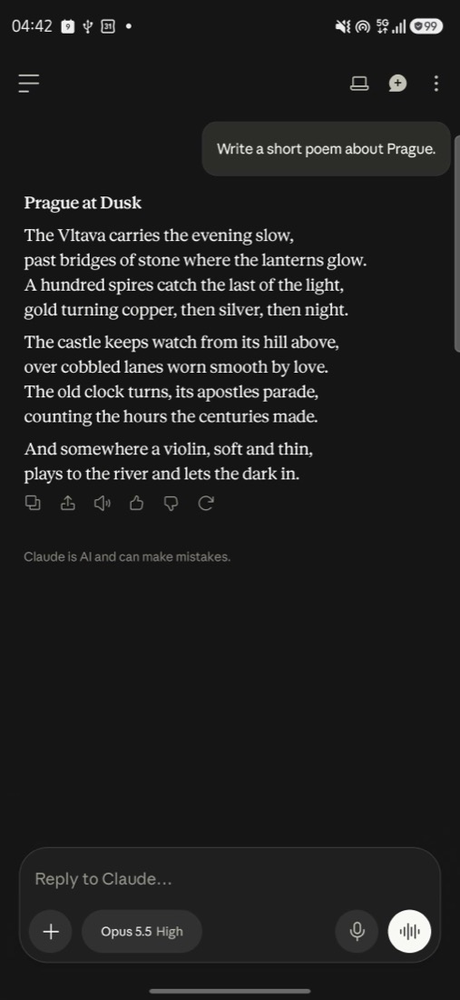
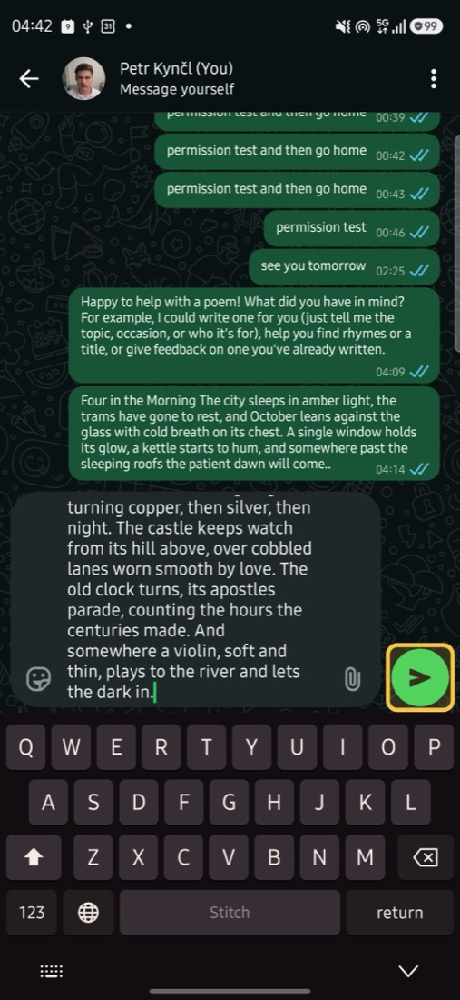

An Android agent that learns a task in any app once, turns it into tested code, and repeats it in seconds with no AI cost. Ask for something it cannot do yet. It explores the app, writes the steps as a program, tests it, installs it, and runs it as code from then on. Anything that sends, pays or deletes waits for you.
The studio runs on your own computer with an Android phone or emulators attached, so "Open the studio" works where Stitch is installed.


Learning "ask Claude for a poem and send it on WhatsApp" from nothing: 82.7 s, 16 model calls. Two new capabilities, tested and installed.
Every time after, with any poem and any contact: about 18 s, one tiny call to split the request. The taps and typing cost nothing.
Six emulators. One learned to set an alarm (24.2 s, $0.052); the other five ran it as code in about 4 s each, with zero model calls.
An agent that builds itself: it notices what it cannot do, creates it, tests it, installs it and uses it again later. Nothing in it was pre-written for an app.
A request matches no installed capability, checked by the capabilities' own patterns with no model call. That is the gap.
A model reads the screen as an accessibility tree, not screenshots, and acts step by step, taking the shortest path a person would.
The trace becomes a parameterized program: stable selectors, templates like {{message}}, trigger patterns and a permission manifest.
It runs the program again with a different input. A program that sends gets a dry run up to the button, which the test never presses.
Any later request runs it as code: seconds, zero model calls. Requests combine capabilities, passing Claude's answer into WhatsApp.
When an app changes and a step breaks, it explores again, retests and installs v2. Every version is kept, and you can roll back.
With several devices, a request goes to one first. If it has to learn, only that one learns; the others get the new capability and run it as code once it works.
The registry is also an MCP server. Every capability Stitch learns becomes a tool that Claude or any MCP client can call, and the list grows while it learns.
claude mcp add stitch -- node mcp/server.mjs
tools: phone_do, claude_ask_prompt,
whatsapp_send_message, clock_set_alarm, ...
A Samsung Galaxy over USB and six Pixel emulators. Learning explores with Claude Sonnet 5.5, everything else uses Claude Haiku 5.5, at API list prices.
| Capability | Learning, once | Every time after |
|---|---|---|
| Ask Claude for a poem and send it to Petr on WhatsApp | 82.7 s, 16 calls, $0.15 | about 18 s, 1 call, $0.0003 |
| Set an alarm, Samsung Clock | 24.6 s, 8 calls, $0.053 | about 5 s, 0 calls, $0 |
| Set an alarm, Google Clock on 6 emulators | 24.2 s, 8 calls, $0.052 | 3.6 to 4.4 s, 0 calls, $0 |
| Search Google Maps, repaired after the screen changed | v2 in 31.2 s, 5 calls | as code again |
| YouTube Studio metrics into a table, with CSV | 16.9 s, 5 calls | as code |
The whole night, all devices: 179 runs, 92 succeeded, 87 did not, most of them while the loop was being built. 52 of 55 reuses ran with zero model calls. $2.07 in total.
Ninety seconds, recorded on the real phone and emulators. Waiting is sped up, nothing is cut.
The video is published at sunrise.
Honest limits from tonight.
"Simulate app update" renames one selector to show a repair; it does not install an update. A real repair also happened tonight, in Google Maps.
Google Clock on the emulators sets times on its dial, which labels only every fifth minute. "Delete all alarms" once stopped on the last alarm; it now retries once and says how far it got.
Longer chains and branching between capabilities. Apps that draw everything in one view, like games. A voice.
Learning uses a stronger model because the small one took detours. It is paid once per capability; reuse needs no model at all.